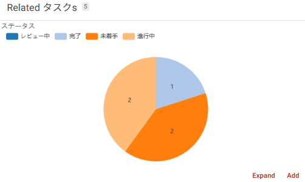
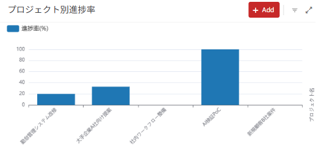
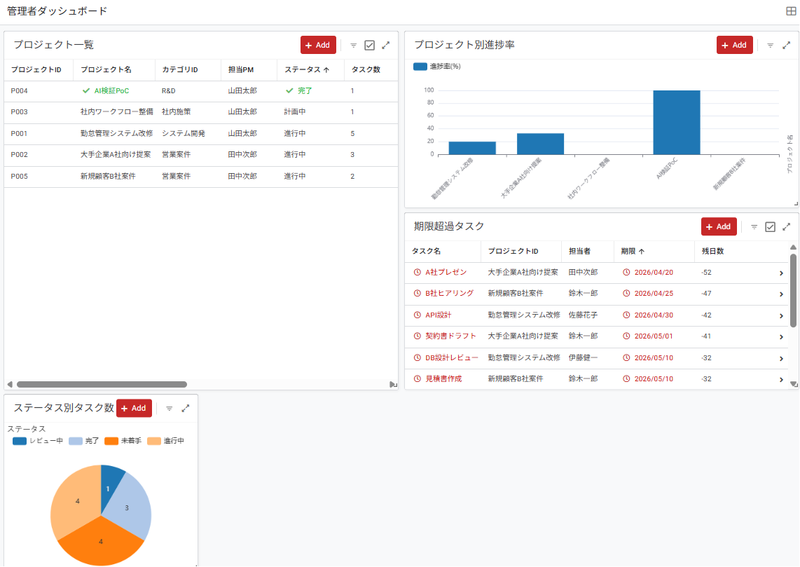

Dashboard Viewで可視化
5-1 この章で作る管理者ダッシュボードの全体像
本章では、第4章で作成した 進捗率・完了タスク数・期限ステータス などの集計値を活用して、管理者ダッシュボード を構築します。プロジェクト管理者(PM)が、複数プロジェクトの状況を 1画面で俯瞰 できる業務アプリらしい画面を作ります。
■ 完成イメージ
■ 本章で作るもの
| No. | ビュー名 | View type | 役割 |
|---|---|---|---|
| 1 | ステータス別タスク数 | chart (aggregate piechart) | タスク全体のステータス分布を円グラフで表示 |
| 2 | プロジェクト別進捗率 | chart (col series) | プロジェクトごとの進捗率を棒グラフで比較 |
| 3 | 期限超過タスク | table (Slice) | 期限を過ぎた未完了タスクを一覧表示 |
| 4 | 管理者ダッシュボード | dashboard | 上記3つ + プロジェクト一覧を1画面に統合 |
- Chart View:データを視覚的に表現するグラフビュー
- Dashboard View:複数のビューを1画面に並べて統合表示
- 動的グルーピング:Chart の Group by 機能で自動集計
- Slice を使った絞り込みビュー:中級編で学んだ Slice の本格活用
5-2 Chart Viewの基本 ─ 4種類のグラフタイプ
AppSheet の Chart View は、テーブルやSliceのデータをグラフ化する機能です。設定する Chart type によって、表示形式が変わります。
■ よく使う4つの Chart type
piechart
カテゴリ別の件数表示に最適
数値の大小比較に最適
[line]
時系列の推移表示に最適
分布の可視化に使う
■ Chart View の基本構成
Chart View では、次の3つを指定するのが基本です。
| 設定項目 | 役割 |
|---|---|
| For this data | どのテーブル(またはSlice)のデータを使うか |
| Chart type | グラフの形式(aggregate piechart / col series / line など) |
| Chart columns | グラフ化するカラム(集計用と表示用) |
■ Chart type の2つのグループ
AppSheet の Chart type は、大きく 「aggregate(集計あり)」 と 「通常(数値そのまま表示)」 の2グループに分かれます。
| グループ | 代表的なchart type | 用途 |
|---|---|---|
| aggregate(集計あり) | aggregate piechart / aggregate donutchart / histogram | カテゴリごとの件数を自動集計。Enum型カラムを指定可能 |
| 通常(集計なし) | piechart / donutchart / col series / row series / line | 各行の数値カラムをそのまま表示。集計済みデータ用 |
5-3 ステータス別タスク数の円グラフを作成
まずはシンプルな 円グラフ から作ります。タスクテーブルのステータス(未着手/進行中/レビュー中/完了)ごとの件数を、円グラフで可視化します。
■ ビューの設定
- View name
ステータス別タスク数- For this data
- タスク
- View type
- chart
- Position
- ref(他のビューから参照される位置)
- Chart type
- aggregate piechart
- Chart columns
- ステータス
- Label type
- Value(件数表示) または Percent(%表示)
- Show legend
- ON
■ 作成手順
左メニューの 📱 Views → + Add View → Create a new view をクリックします。
次の通り設定します。
・View name:ステータス別タスク数
・For this data:タスク
・View type:chart
・Position:ref(Dashboard内で使うため、メニューには出さない)
View Options セクションを展開し、Chart type から 「aggregate piechart」 を選択します(上段の集計グループにあります)。
Chart columns で 「ステータス」 を選択します。aggregate piechart を選んだ後だけ、Enum型のステータスが選択肢に表示されます。
Label type を選択します。Value(件数表示) / Percent(%表示) / Key(カラム名) から好みで選びます。本マニュアルでは Value を推奨。
Show legend を ON にし、右上の Save をクリックします。

menu にすると下部メニューに表示されますが、ref にすると 下部メニューには出さず、他のビュー(Dashboard等)から参照される時だけ表示 されます。グラフ単体ではなく、ダッシュボードの一部として使いたいときに ref が便利です。
5-4 プロジェクト別進捗率の棒グラフを作成
次は 棒グラフ で、各プロジェクトの進捗率を比較できる形にします。第4章で作成した進捗率 Virtual Column を活用します。プロジェクトテーブルは各行がすでに集計済み(プロジェクト1行 = 1つの進捗率)なので、aggregate 系ではなく通常の「col series」 を使います。
■ ビューの設定
- View name
プロジェクト別進捗率- For this data
- プロジェクト
- View type
- chart
- Position
- ref
- Chart type
- col series(縦棒グラフ)
- Chart columns
- 進捗率
- Show legend
- ON
■ 作成手順
+ Add View → Create a new view をクリックします。
次の通り設定します。
・View name:プロジェクト別進捗率
・For this data:プロジェクト
・View type:chart
・Position:ref
View Options で Chart type から 「col series」 を選択します(下段の通常グループにあります)。
Chart columns で 「進捗率」 を選択します。各プロジェクトの進捗率(数値カラム)が棒グラフのバーになります。
Show legend を ON にし、Save をクリック。

- aggregate系(aggregate piechart など):カテゴリカラム(Enum)を指定すると、AppSheetが自動で件数を集計してくれる。「ステータス別の件数」のような集計が必要な場合に使う
- 通常系(col series / piechart など):すでに集計済みの数値カラム(Virtual Columnなど)をそのまま表示する。「各プロジェクトの進捗率」のように集計不要な場合に使う
本章では、5-3でステータス別の件数集計に aggregate piechart を使い、5-4でプロジェクト別の進捗率(集計済み)表示に col series を使い分けています。
5-5 Dashboard Viewで複数ビューを統合
ここまでで個別のChart Viewを2つ作成しました。これらと既存のビューを Dashboard View で1画面に統合します。
■ 事前準備:期限超過タスクのSliceとビューを作成
ダッシュボードに「期限超過タスク」のリストを表示するため、まず Slice を作ります。
① 期限超過タスクのSlice作成
左メニューの Data から タスク テーブルを開きます。
左パネルの タスク テーブル名の右に表示される 「+」 アイコン(マウスホバー時に出現)をクリックします。
「Add a new slice for the "タスク" table」 ダイアログが開きます。Suggestionsは無視し、下部の 「Create a new slice for タスク」 ボタン(青いボタン)をクリックします。
新規Slice作成画面が開くので、次の通り設定します。
・Slice name:期限超過タスク
・Source table:タスク(自動設定済み)
・Row filter condition:下記の式を入力
AND(
[残日数] < 0,
[ステータス] <> "完了"
)右上の Save をクリックして保存します。
② 期限超過タスクビューを作成
- View name
期限超過タスク- For this data
- 期限超過タスク(Slice)
- View type
- table
- Position
- ref
- Sort by
- 期限(Ascending)
- Column order
- タスク名 / プロジェクトID / 担当者 / 期限 / 残日数
■ Dashboard View の作成
- View name
管理者ダッシュボード- For this data
- (Dashboard では不要)
- View type
- dashboard
- Position
- menu(下部メニューに表示)
- View entries
- 下記の4ビューを配置
■ 作成手順
+ Add View → Create a new view をクリックします。
次の通り設定します。
・View name:管理者ダッシュボード
・View type:dashboard
・Position:menu
View Options の View entries で 「+」 をクリックし、ダッシュボードに含める4つのビューを順に追加します。
① ステータス別タスク数
② プロジェクト別進捗率
③ プロジェクト一覧(第4章で作成済)
④ 期限超過タスク
各ビューエントリの右側に表示されるドロップダウンで、表示サイズ(Large / Wide / Tall / Small)を選択できます。今回のおすすめ設定は次の通りです:
① ステータス別タスク数 → Small(円グラフはコンパクトでも見やすい)
② プロジェクト別進捗率 → Wide(棒グラフは横長が見やすい)
③ プロジェクト一覧 → Large(カラム数が多いのでメインコンテンツとして大きく)
④ 期限超過タスク → Wide(テーブルは横長表示)
📐 サイズの意味:
・Small:コンパクト表示(縦横ともに小さい)
・Wide:横長表示(棒グラフ・テーブル向け)
・Tall:縦長表示(リスト・縦に長いコンテンツ向け)
・Large:大きく表示(メインコンテンツ向け)
💡 最初は全部 Large のままでもOKです。 プレビューで動作を確認してから、見やすさに応じてサイズを調整するのが効率的です。
Use tabs in mobile view をオンにすると、スマホで開いたときにタブ切り替え式の表示になります(画面が狭いとき向け)。
Save をクリック。プレビューの下部メニューに 「管理者ダッシュボード」 アイコンが追加されているはずです。

設定場所:Dashboard View の Options → Interactive mode をON。
5-6 動作確認とまとめ
■ 確認チェックリスト
- ステータス別タスク数(Chart View / pie)が作成されている
- プロジェクト別進捗率(Chart View / column)が作成されている
- 期限超過タスクのSliceとビュー(table)が作成されている
- 管理者ダッシュボード(Dashboard View)が作成され、下部メニューに表示されている
- 管理者ダッシュボードを開くと、4つのビューが1画面に表示される
- ステータス別タスク数の円グラフが正しく表示されている(未着手3 / 進行中5 / レビュー中1 / 完了3)
- プロジェクト別進捗率の棒グラフで、P004が100、P001が20など正しい値が表示される
- 期限超過タスクには、期限を過ぎた未完了タスクのみが表示される(現在の日付に応じて0件の場合もある)
■ この章で作成したビュー一覧
| No. | ビュー名 | View type | Position | 役割 |
|---|---|---|---|---|
| 1 | ステータス別タスク数 | chart (aggregate piechart) | ref | タスクのステータス分布を可視化 |
| 2 | プロジェクト別進捗率 | chart (col series) | ref | プロジェクト毎の進捗率を比較 |
| 3 | 期限超過タスク | table (Slice) | ref | 期限超過の未完了タスクを抽出 |
| 4 | 管理者ダッシュボード | dashboard | menu | 上記3つ + プロジェクト一覧を統合 |
■ 第5章のまとめ(中級編との違い)
| No. | 上級編で新しく扱ったポイント | 使った仕組み |
|---|---|---|
| 1 | グラフによる可視化 | Chart View (pie / column) |
| 2 | 自動集計 | Group aggregate (COUNT / SUM) |
| 3 | 複数ビューの統合 | Dashboard View + View entries |
| 4 | Sliceを使った業務ビュー | 期限超過タスクの抽出 |
| 5 | 表示位置の使い分け | Position: menu / ref の使い分け |